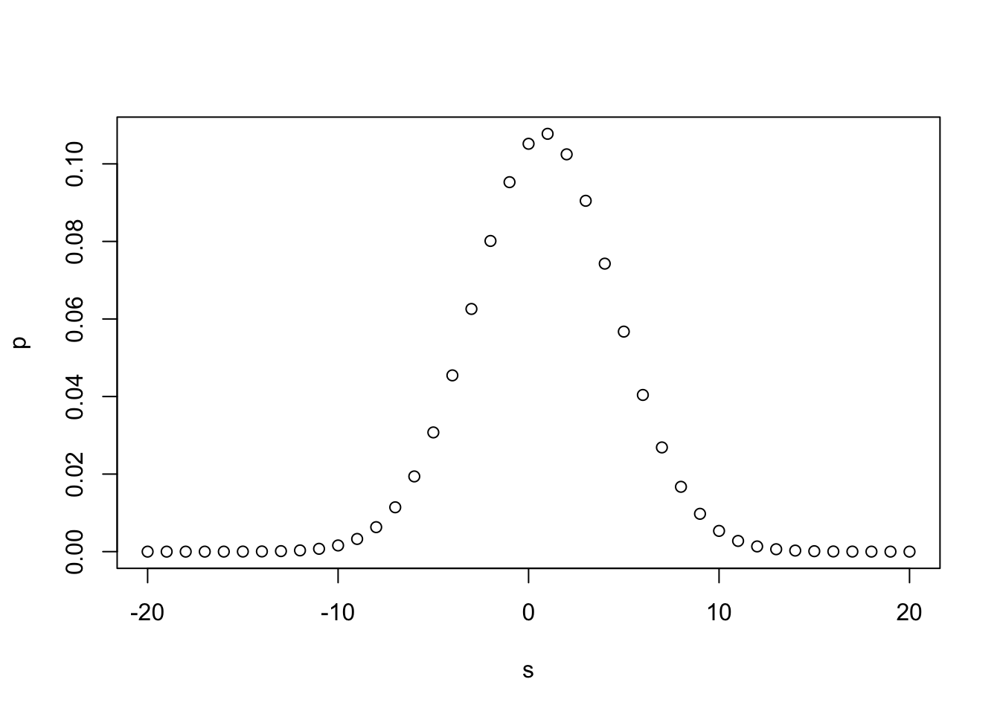
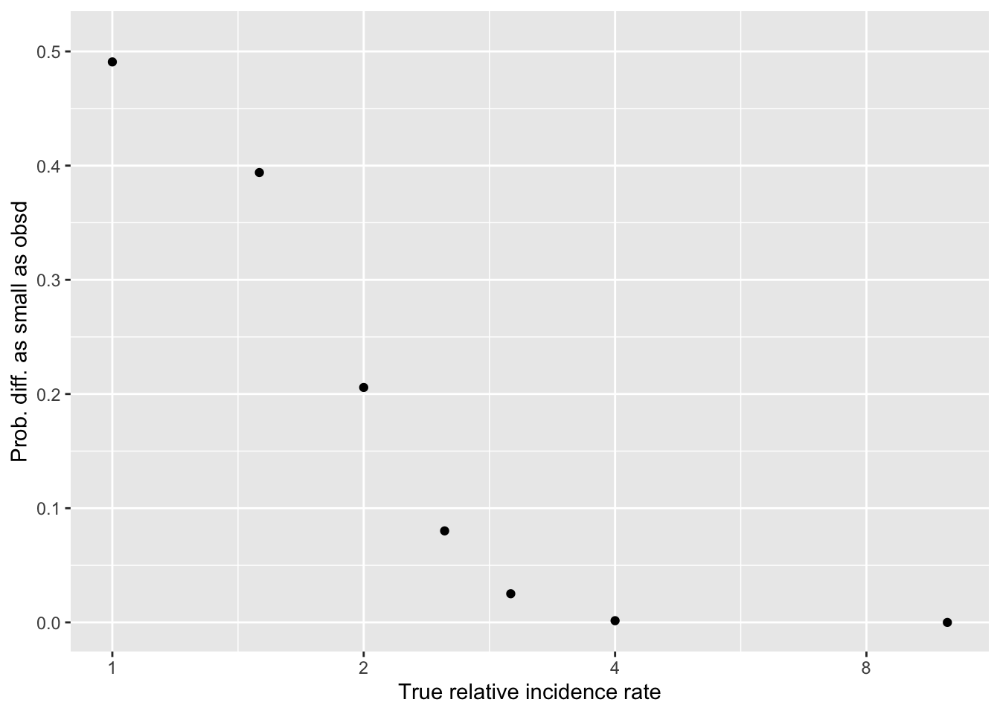

Code
#library(googlesheets4)
#read_sheet("XXX")
#Need authorization here; how to do it? Note -- we need those cells to be anonymized This work has been moved from the EA market testing repo, with ‘identifying’ content redacted
The context for this trial is discussed here (private) and will be publicly shared here when we gain permission.
#library(googlesheets4)
#read_sheet("XXX")
#Need authorization here; how to do it? Note -- we need those cells to be anonymized Note: subject lines were different … the impact email got more opens
‘Giving Season contributions - website’ for donations … because CtA is a donation button on the website
We’ve 1345 unique emails in the dataset for ‘control’ treatment 1 and 1190 unique emails for treatment 2, if I did the quick calculations correctly. (Todo– integrate the data here.)
We know some emails are repeated. To analyze this correctly I should bring in the actual distribution of ‘number of times an email is in the data’ and simulate assignment. (Or maybe this is a ‘Poisson’ thing?)
As a (perhaps incorrect) first pass I could consider ‘legitimate unique email shows up in the treatment group’ as a random binomial event. (I guess the event is something like ’email is (not) duplicated?) Then we can do the standard binomial (Chi-sq) and Fisher’s exact tests.
n1 <- 1345
n2 <- 1190
(
binom_emails <- prop.test(n1, n1+n2, correct=FALSE)
)
1-sample proportions test without continuity correction
data: n1 out of n1 + n2, null probability 0.5
X-squared = 9.4773, df = 1, p-value = 0.00208
alternative hypothesis: true p is not equal to 0.5
95 percent confidence interval:
0.5111129 0.5499385
sample estimates:
p
0.530572 (
fisher_emails <- fisher.test(matrix(c(n1, n2, n2, n1), ncol=2))
)
Fisher's Exact Test for Count Data
data: matrix(c(n1, n2, n2, n1), ncol = 2)
p-value = 1.512e-05
alternative hypothesis: true odds ratio is not equal to 1
95 percent confidence interval:
1.142247 1.428639
sample estimates:
odds ratio
1.277394 If the above tests are reasonable, this imbalance is very unlikely to occur by chance.
Note: if we think this is opens, this is a demonstration that one email is opened more.
]
In the next section I started an off-the-cuff simulation approach, in folded code. But I believe that the analytical form here with code and a simulation here should be applicable.
Reprinting and discussing from Stackexchange post
“derive the distribution of the difference between two binomial random variables.”
I can give you an answer for the pmf of X-Y. From there |X - Y| is straightforward.
So we start with
\(X \sim Bin(n_1, p_1)\)
\(Y \sim Bin(n_2, p_2)\)
We are looking for the probability mass function of \(Z=X-Y\)
Note: in our case we (arguably) care about the difference in ‘proportion of incidences’, but as we also have similar sample sizes (\(n_1 \approx n_2\)) this is basically a normalization
First note that the min and max of the support of Z must be \((-n_2, n_1)\) since that covers the most extreme cases (\(X=0\) and \(Y=n_2\)) and (\(X=n_1\) and \(Y=0\)).
Then we need a modification of the binomial pmf so that it can cope with values outside of its support.
\(m(k, n, p) = \binom {n} {k} p^k (1-p)^{n-k}\) when \(k \leq n\) and 0 otherwise.
Note that this “modified binomial” is what the statistics::dbinom function in R returns.
Then we need to define two cases
- \(Z \geq 0\)
- \(Z \lt 0\)
In the first case
\(p(z) = \sum_{i=0}^{n_1} m(i+z, n_1, p_1) m(i, n_2, p_2)\)
since this covers all the ways in which X-Y could equal z.
Because \((i+z) - i = z\), of course … ‘sum up’ the probability of each of these ‘co-occurances’
For example when z=1 this is reached when X=1 and Y=0 and X=2 and Y=1 and X=3 and Y=4 and so on. It also deals with cases that could not happen because of the values of \(n_1\) and \(n_2\). For example if \(n_2 = 4\) then we cannot get Z=1 as a combination of X=4 and Y=5. In this case thanks to our modified binomial pmf the probablity is zero.
For the second case we just reverse the roles. For example if z=-1 then this is reached when X=0 and Y=1, X=1 and Y=2 etc.
\(p(z) = \sum_{i=0}^{n_2} m(i, n_1, p_1) m(i+z, n_2, p_2)\)
Put them together and that’s your pmf.
\(f(z)=\)
\[\begin{cases} \sum_{i=0}^{n_1} m(i+z, n_1, p_1) m(i, n_2, p_2),& \text{if } z\geq 0\\ \sum_{i=0}^{n_2} m(i, n_1, p_1) m(i+z, n_2, p_2), & \text{otherwise} \end{cases}\]Here’s the function in R and a simulation to check it’s right (and it does work.) https://gist.github.com/ragscripts/9681819
Let me try to apply it…
Defining their code for this function: ::: {.cell}
modBin <-dbinom #DR: I just do this renaming here for consistency with the rest ... but the modBin they defined was redundant
diffBin<-function(z, n1, p1, n2, p2){
prob <- 0
if (z>=0){
for (i in 1:n1){
prob <- prob + modBin(i+z, n1, p1) * modBin(i, n2, p2)
}
}
else
{
for (i in 1:n2){
prob<-prob+modBin(i+z, n1, p1)*modBin(i, n2, p2)
}
}
return(prob)
}:::
Rather than using their example, I’ll dive right in to the present case.
My notes on the outcomes as of 15 Dec 2021
Treatment 1 - Impact and Treatment 2 - Emotion Story tabs
Treatment 1: We record - 8 unique emails donating, 26 donations in total, - worth 5200 USD in total - 1345 unique emails listed as getting ‘control’ treatment 1
Treatment 2: - 6 unique emails, 28 donations so far — worth 7500 USD in total. - 1190 unique emails listed for treatment 2
If I believe my ‘unique emails count’, that implies an 0.59% ‘conversion’ rate for T1 - Control a 0.50% conversion rate for T2 - Emotion/Story
Putting the observations into defined objects (later: do from data)
n1 <- 1345
n2 <- 1190
d1 <- 8
d2 <- 6
z <- d1-d2Computation for a few ‘ad-hoc cases’ (later explore the space with vectors of values)
p1 <- (d1+d2)/(n1+n2)
p2 <- p1
(
db_0 <- diffBin(z, n1, p1, n2, p2)
)[1] 0.1024599This implies there is a 10.2% chance of getting this exact difference of +2 incidences between the treatments (in one direction), if the true incidence rates were equal.
Let’s plot this for a range of ‘incidence rate differences’ in this region. (Sorry, using the traditional plot, ggplot is better).
s <- seq(-10*z, 10*z)
p<-sapply(s, function(z) diffBin(z, n1, p1, n2, p2))
plot(s,p)
We see a large likelihood of values in the range of the +2 difference observed, and a low likelihood of a difference of 10 or more in either direction.
ltmag_diffBin <- function(z, n1, p1, n2, p2){
prob <- 0
z_n <- -z #negative value
for (i in z_n:z){ #sum for all integer differences between observed value and its negative, inclusive
prob <- prob + diffBin(i, n1, p1, n2, p2)
}
return(prob)
}Now, a similar computation as above, but for ‘this big or smaller in magnitude’:
(
mag_db_0 <- ltmag_diffBin(z, n1, p1, n2, p2)
)[1] 0.4908031This implies there is a 49.1% chance of getting a difference no larger than this one in magnitude of +/-2 incidences between the treatments if the true incidence rates were equal.
And finally, what we were looking for: the chance of ‘a difference this small or smaller’ as a function of the true difference…
Set up an arbitrary vector of ‘true differences’ (to keep it simple, only change it in one direction for now …)
Below, I plot
Y-axis: ’how likely would a difference in donations ‘as small or smaller in magnitude’” than we see in the data against
X-axis: if the “true difference in incidence rates” were of these magnitudes
options(scipen=999)
B <- c(1, 1.5, 2, 2.5, 3, 4, 10)
p1 <- rep((d1+d2)/(n1+n2), length(B))
p2 <- p1*B
as.list(ltmag_diffBin(z, n1, p1, n2, p2)*100) %>% format(digits=3, scientific=FALSE)[1] "49.1" "39.4" "20.6" "8.02"
[5] "2.51" "0.153" "0.00000000000855"probmag <- ltmag_diffBin(z, n1, p1, n2, p2)
#qplot(B, probmag, log = "x", xlab = "True relative incidence", ylab ="Prob. of difference this small")
(
probmag_plot <-
ggplot() +
aes(x=B, y=probmag) +
geom_point() +
scale_x_continuous(trans='log2') +
ylim(0,.51) +
xlab("True relative incidence rate") +
ylab("Prob. diff. as small as obsd")
)
Hard-coded takeaways 15 Dec 2021 :
Our data is consistent with ‘no difference’ (of course) … but its also consistent with ‘a fairly large difference in incidence’
E.g., even if one treatment truly lead to ‘twice as many donations as the other’, we still have a 20% chance of seeing a differences as small as the one we see (of 8 versus 6)
We can reasonably ‘rule out’ differences of maybe 2.5x or greater
Main point: given the rareness of donations in this context, our sample size doesn’t let us make very strong conclusions in either directions … at least not yet. I hope that combined with other evidence, we will be able to infer more